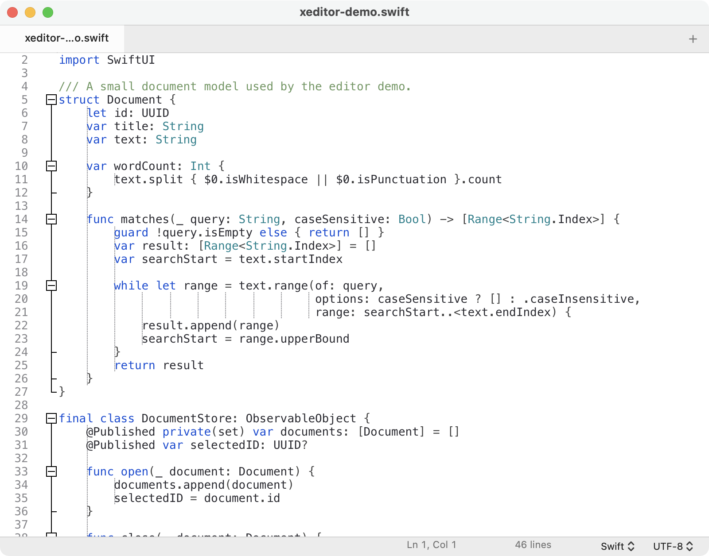

原生轻快Native and quick
AppKit + Scintilla 内核，冷启动不到一秒。长文件滚动、选区和输入都保持跟手。 An AppKit + Scintilla core starts in under a second and keeps large files responsive while scrolling, selecting and typing.
为 macOS 打造的原生编辑器 A native editor, built for macOS
Xeditor 用 AppKit 与 Scintilla 写成，启动即用、滚动顺滑。语法高亮、正则查找、编码保护与开发者工具，都收在一个安静的窗口里。 Xeditor is built with AppKit and Scintilla: instant launch, effortless scrolling, syntax highlighting, regex search, encoding-safe saves and developer tools — all in one quiet window.

不打扰你的编辑习惯，只把每件小事做扎实。 It stays out of your way and does the small things properly.
AppKit + Scintilla 内核，冷启动不到一秒。长文件滚动、选区和输入都保持跟手。 An AppKit + Scintilla core starts in under a second and keeps large files responsive while scrolling, selecting and typing.
内置 Lexilla 词法分析器，按扩展名自动识别语言；缩进参考线、书签与行号一并就位。 Lexilla lexers pick the language from the file extension, with indent guides, bookmarks and line numbers included.
识别 UTF-8、UTF-16、GB18030 等编码与 BOM，保存时写回原编码；无法表示时先提示，绝不悄悄毁掉文件。 Detects UTF-8, UTF-16, GB18030 and BOMs, then saves back in the same encoding — and warns you before anything could be lost.
正则、大小写、全词匹配；Find All 结果面板可跳转，匹配项可高亮、标记颜色或加书签。 Regex, case and whole-word modes, a jumpable Find All panel, and matches you can highlight, colour-mark or bookmark.
JSON ⇄ YAML、Base64 编解码、哈希计算、文本比较与结构化格式化，都在工具菜单里。 JSON ⇄ YAML, Base64, hashing, text comparison and structured formatting live in the Tools menu.
英语、简体中文、繁体中文、日语与韩语。切换立即生效，不用重启。 English, Simplified and Traditional Chinese, Japanese and Korean. Switch instantly — no restart.
最新版本Latest release
下载后双击磁盘映像，窗口里会出现 Xeditor 与 Applications 文件夹。Double-click the downloaded disk image. Xeditor and an Applications folder appear.
把 Xeditor 图标拖到 Applications 快捷方式上，然后推出磁盘映像。Drag Xeditor onto the Applications shortcut, then eject the disk image.
应用未经过 Apple 公证。首次启动若被拦截，请在 Finder 中右键 Xeditor → 打开，或在「系统设置 → 隐私与安全性」里放行。The app is not notarized. If macOS blocks the first launch, right-click Xeditor in Finder → Open, or allow it in System Settings → Privacy & Security.
免费、开源，GPLv3。适用于 macOS 14 Sonoma 及更新系统。Free and open source under GPLv3. Requires macOS 14 Sonoma or later.